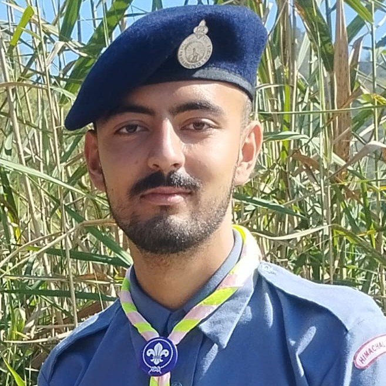

Highest State Awards: Rajya Puraskar
The Rajya Puraskar is the highest award a Rover or Ranger can earn at the state level. It is a testament to their sustained commitment to scouting principles, advanced skills, and significant service to the community. We are incredibly proud of our awardees.

Rover Tanish Devkaran
🏅 Rajya Puraskar

Rover Karan Thakur
🏅 Rajya Puraskar
Key Initiatives & Community Impact
- 🌿 Environmental Stewardship: Our unit actively participates in Swachhta Campaigns under the Swachh Bharat Abhiyan, organizing cleanliness drives on campus and in the local community. We have also conducted numerous tree plantation drives to promote environmental awareness.
- ❤️ Blood Donation Camps: In service to humanity, our Rovers and Rangers regularly organize and volunteer at blood donation camps, contributing to this life-saving cause.
- 🕊️ Peace & Unity Marches: To promote social harmony and peace, our unit has organized and participated in several peace marches and awareness rallies on important national and international days.
Active Participation & Representation
- 🤝 Messengers of Peace (MoP): Our unit is an active participant in the global Messengers of Peace initiative, with members logging thousands of service hours towards community projects that promote peace and sustainable development.
- 🧣 World Scarf Day: Every year on August 1st, our members proudly wear their Scout scarves in public to showcase the unity of the movement and participate in local events to celebrate this special day.
- 🎓 State-Level Representation: We consistently send a strong contingent of Rovers and Rangers to represent our college and district at the BSG Himachal Pradesh State-Level Meets, participating in various competitions and workshops.